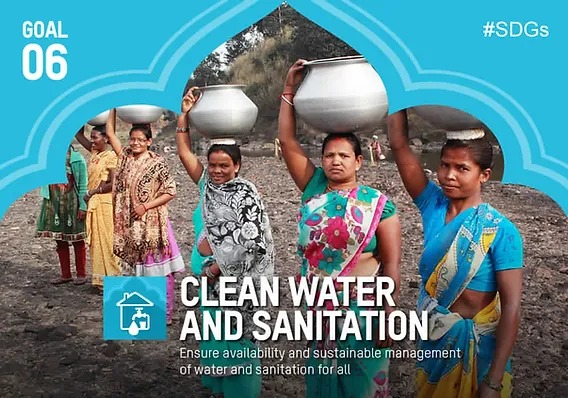

Access to safe water, sanitation and hygiene is the most basic human need for health and well-being. Billions of people will lack access to these basic services in 2030 unless progress quadruples.One in three people live without sanitation. This is causing unnecessary disease and death. Although huge strides have been made with access to clean drinking water, lack of sanitation is undermining these advances. There has been positive progress. Between 2015 and 2022, the proportion of the world's population with access to safely managed drinking water increased from 69 per cent to 73 per cent. by providing affordable equipment and education in hygiene practices, we can see more positive progress and stop this senseless suffering and loss of life. The demand for water has outpaced population growth, and half the world's population is already experiencing severe water scarcity at least one month a year.